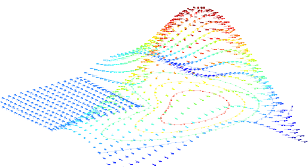
Installation:
1. Unpack the spatialbox.zip into directory $matlabroot$\work\spatialbox (recommended), where $matlabroot$ is the path of the Matlab[1] installation path.
Execution
a) Run the RUN.BAT file by double-clicking its name in the Windows XP explorer window, or manually by: Start à Run à type: run.bat and press Enter.
Otherwise, if the user wishes to work with Matlab and start the toolbox from the Matlab desktop:
b) Start Matlab by matlab.exe or Start à Programs and select Matlab 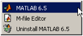
Note: It is possible to run the toolbox without loading Java Virtual Machine (JVM) environment of Matlab. The memory consumption of Matlab without JVM is much lower and it is recommended if the user encounters Out of Memory errors or slow performance. In order to run Matlab in the ‘text mode’ change the command line of the icon to matlab –nojvm or Start à Run à matlab -nojvm
Change the path to the directory with the toolbox, or add the toolbox’s directory to the Matlab path
a) Change working directory:
>> cd c:\\matlab6p5\\work\\spatialbox\ ****
or
Add path by:
>> addpath c:\\matlab6p5\\work\\spatialbox
Check that Matlab recognizes the toolbox by typing
>> help spatialbox
If the output does not look like:
SPATIALBOX Application M-file for spatialbox.fig
FIG = SPATIALBOX launch spatialbox GUI.
SPATIALBOX(‘callback_name’, ...) invoke the named callback.
Then please, check the path or repeat the above steps.
It is also possible to add the Spatial Toolbox directory to the Matlab path with GUI (only under JVM environment) by:
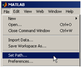
and then
Getting started
If the main window (Figure 1) is not on the screen, run the toolbox by >> spatialbox from the Matlab desktop.
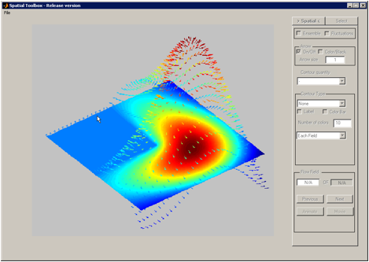
Figure 1: Spatial toolbox GUI - main window
At the top-right corner there are Menu (File, Window) and the toolbar icon (Load files), in the center there is a main axes and on the right-hand side there are GUI controls.
The Spatial Toolbox operation begins with loading the data. The data could be loaded as Insight [2] \*.vec or \*.v3d files, by File -> Load Vector File.
The user can press the button shown below:
and then select the folder that includes the data files from the window, shown in Figure 2, or type the name of the folder instead of the default path. There is an option to double-click the .. in the list of files box, or double click the name of the directory within the list in order to get the files in the subdirectory. \*.vec files are listed as a default, and the user can check checkbox ‘switch to .v3d in the in order to see the list of \*.v3d files.
When the list of files is shown (see Figure 3), user might use on the selection options:
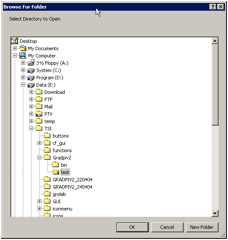
Figure 2: List of the directories to choose the path of the VEC or V3D files
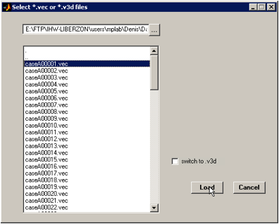
Figure 3: Selection of the files from the listbox. One, two with CTRL, or many with CTRL or SHIFT options are possible. Press LOAD button to finish the selection.
Press Load button to finish the selection. The Spatial Toolbox reads the vector files, initializes the toolbox default variables and calculates several flow quantities. This part might take from several seconds to a few minutes, depending on the length of the selected series and the size of each vector map[3].
This part is re-implemented (since the last release of the Spatial Toolbox on April 16.), by using uigetdir function.
Note: for the Spatial and Time Analysis Toolbox, the order of the selected files is not important, the user might pick the last file first and after that the first file. However, during the loading procedure, the files will be automatically sorted in the ascending order of their file names. This default sorting procedure is due to the original goal of the toolbox is Time Series Analysis, where Time Series is presumably recorded with PIV in some kind of sequence.
When at least one vector file is selected, the default window looks like in the following Error! Reference source not found..
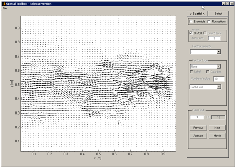
Figure 4: Default window, arrows, GUI controls, main axes.
The user can choose the quantity that will be displayed on the screen. There are four main sets of quantities (we can call them 4 modes). The switch between the modes is done with two checkboxes :
1. Instantaneous mode (not one of the checkboxes is checked on): the list of quantities is:
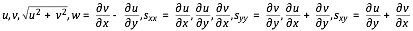
2. Ensemble averaged mode (only Ensemble checkbox is checked on), ensemble averages of the instantaneous quantities, the list is:
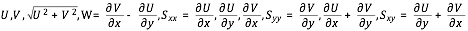
3. Fluctuations mode (only the Fluctuations checkbox is checked on)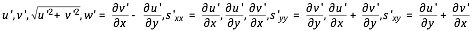
4. Turbulent quantities mode (both checkboxes are checked on), the list is:
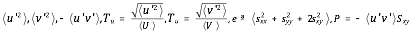
=
Available contour types are:
- Flood - smooth color patches, no sharp boundaries - Color Line`` - only color boundaries, according to the color map of the selected quantity. - ``Flood + Line – color patches, with sharp boundaries - Black Line – only boundaries of the contours
There are several examples given below to show some of the available arrow and contour combinations:
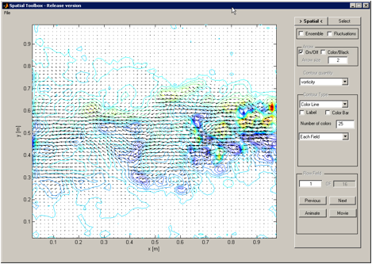
Figure 5: Instantaneous velocity field (arrows) and the instantaneous vorticity field in color-line contour mode. Color bar is added and the number of contour levels is set to be 25.
Control of contour levels (i.e. colors)
The user can manually enter number of contour levels (or number of colors), by entering the desired number in the edit box:
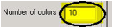
and pressing Enter.
The number of colors (default or manually set) defines the number of contour levels of the selected quantity, but in one of four modes (contour modes):
- Each Field – the contour is automatically updated to each presented map limits (min and max) and distributed evenly into number of contour levels (i.e. number of colors)
- All to Display – the currently presented map defines the contour levels for all forthcoming maps, unless other option is selected. If the user changes the quantity, the limits are updated, but still will be constant for all forthcoming views.
- All Fields – the contour levels are defined by the maximum and minimum values of the selected quantity from the whole selected dataset. This is very powerful option, that allows one to compare the values visually, when not even one value will be out of the defined color set (which is possible to happen in manual or All to Display modes). However, one should realize that in order to determine the absolute maximum and minimum values, the whole dataset has to be calculated at least once. For example, All Fields of the vorticity demands the calculation of gradients in both directions of the selected dataset (which could be really long for the Time-Resolved PIV).
Manual - the user can select the maximum and minimum level of the color to be shown, the selection could be symmetric by entering the same positive and negative values or anti-symmetric, if different values are used.
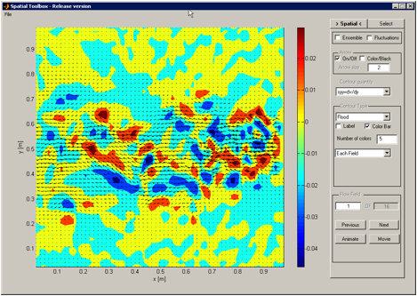
Figure 6: Instantaneous velocity field (longer arrows, set to 3), Flood contour type of the rate-of-strain component, number of contour levels set to 3 to emphasize strong positive and negative regions.
Animation
The user can run the animation of the successive maps, with all the visualization properties that were selected before, by pressing Animation button. The first map is the current map (that could be manually entered in the edit box) and pressing again the Animation button stops the animation at any map. Otherwise the animation will continue up to the last map.
During the animation, the movie is NOT stored in the memory. The user should operate Movie button in the same way as Animation button, but in addition, the user will be prompted to type in the file name of the AVI file. The Windows AVI video file (uncompressed, default frame-per-second rate of 15 fps) is saved, when the last map is reached, or the Movie button is pressed again (i.e. released).
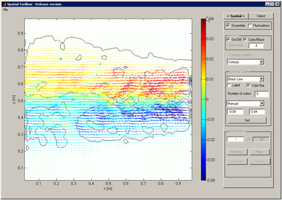
Figure 7: Ensemble averaged velocity field, shown by arrows. The color of the arrows and the sharp boundaries are of the average vorticity field, the number of contour levels is set to 5, and the color is distributed symmetrically by manual set of contour levels between –0.04 and 0.04 [1/sec].
1) In order to select data, move to ‘select’ tab, where selection tools are placed:
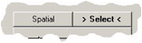
Figure 8: Switching to selection tab
2) Selection Tools – in selection tab, the following selection tools are present (see Figure 9)
2.1 General description
-Only one type of selection is allowed, for example points can’t be selected with region.
- In order to quit selection mode, after region/points are selected, press middle mouse button or 3rd mouse button.
- When ‘Reset’ button is pressed all selections are cleared.
- When ‘Spatial’ tab is pressed, all selections are cleared.
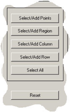
Figure 9: Selection tools
2.2 Select/Add points – allows to select single/multiple points from the map (see Figure 10)
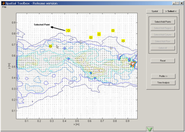
Figure 10: Selecting points
2.3 Selecting Region(s)
-Adding two or more regions: there is restriction to select only regions that have at least one side equal, and ends of the side lie on the same line:
|image22|
Figure 11: Selecting regions
2.4 Selecting Rows/Column
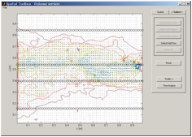
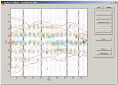
Figure 12: Selecting rows (left) or columns (right).
2.4 Select All
- Pressing ‘Select All’ will select the entire map (see Fig.6)
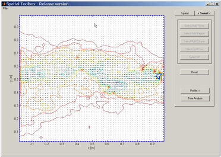
Figure 13: Selecting the entire map.
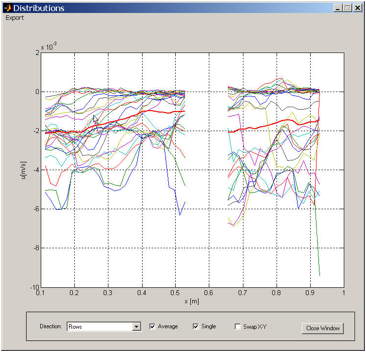
Figure 14: Distribution window, with the Average distribution added to the plot (thick red line). The case is for the two disconnected regions.
Available options:
- Direction (Rows/Columns) – changes one of the axis to x/y respectively
- Swap X-Y – changes between axes (Fig.8)
- Single – all the data in the selected region of interest (rows or columns or regions or all) is shown in spatial distribution along rows or along columns (i.e. X or Y profile per row or column).
Average – when turned on, red line presenting average of quantities is shown.
File Menu options:
- Export-> Figure: Export to Matlab figure allows one to use Plot Edit options of Matlab
- Export->CSV:Allows user to export select file name, for saving data in CSV format.
|image27|
Figure 15: Distirbution with axes swaped (rotated 90 degrees) by checking ‘Swap X-Y’.**
|image27|
Figure 16: The example of the Export to Figure output.**
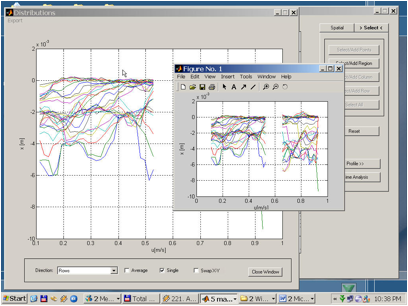
Figure 17: When Export to CSV file is chosen, user is prompted to type the file name.
Figure 18: The Export to Figure allows the user to copy one curve from the figure into another, add text, arrows, etc. and change all the visual style of the figure.
The only necessary step to transfer data to the Time Toolbox is the selection of the region of interest. As it is described above, the selection could be a set of points, rows, columns, regions or the whole map. When the selection is done, the Time Analysis button is pressed.
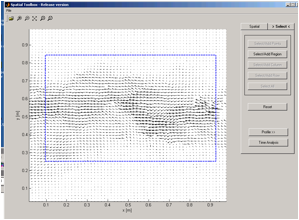
Figure 19: Selection of the region of interest
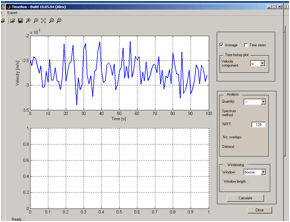
Figure 20: First window of the Time Toolbox, default plot is spatial averaged time history of the u velocity (from left to right).
The possible selections in Velocity Component list are instantaneous and fluctuating velocity components from the left to right (u), from the top to bottom (v) and in case of stereoscopic PIV data it includes also the out-of-plane component w.
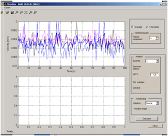
Figure 21: Time history of the selected point, operated by checking the Time Series checkbox. Note that Average is checked too, and it is emphasized by thick blue line.
Depends on the two checkboxes, the user might choose to see only pointwise time history and/or its spatial average. In addition, the user can plot the time history of the fluctuation velocities, same as the instantaneous for the three components.
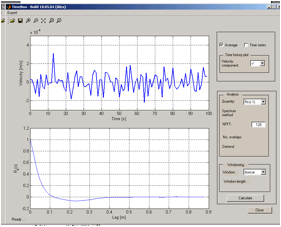
Figure 22: An example of the lateral correlation, Rii relates to the selected velocity component (i.e. if u is selected it is Ruu, from the left to the right) and k1 refers to the rows direction (from the top to the bottom).
The available quantities are: the autocorrelation function in time and space (longitudinal and lateral), and the respective spectrums – the frequency spectrum and two wave-number spectra. For more details and definitions, please see the definitions and formulae in the contract attachment. The quantities have to be operated on the fluctuations in order to obtain meaningful results.
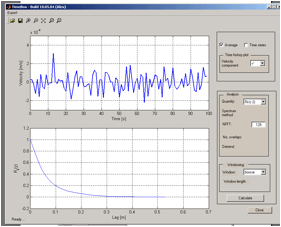
Figure 23: An example of the longitudinal correlation function, in this case it is Rvv in k2 direction.
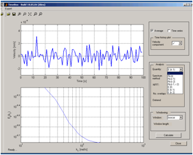
Figure 24: An example of the wave-number spectra.
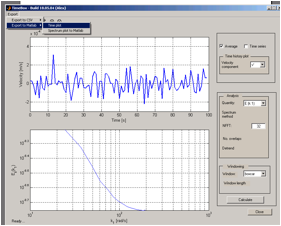
Figure 25: Each one of the axes could be independently exported or saved into Matlab figure or comma separated file.
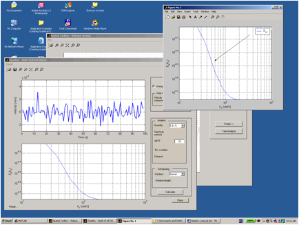
Figure 26: Export to Matlab figure allows one to use Plot Edit options of Matlab.
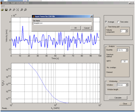
Figure 27: For each comma separated file, a unique file name is used.
[1] MATLAB is a registered trademark of the MathWorks, Inc.
[2] Insight is a registered trademark of the TSI Inc.
[3] Test data (case A) on PC with AMD 2000+, 512Mb RAM, 40Gb HD, Matlab 6.5 on Windows XP Pro takes about 18 seconds for 100 vector maps, on P-III, with 256Mb, Windows 2000, 20Gb HD, Matlab 6.5 is 45 seconds. The most consuming part is file I/O operations, i.e. reading of the .vec files.